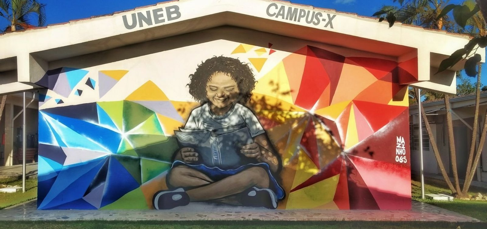

<!DOCTYPE html>
<head>    
    <meta http-equiv="content-type" content="text/html; charset=UTF-8" />
    
        <script>
            L_NO_TOUCH = false;
            L_DISABLE_3D = false;
        </script>
    
    <script src="https://cdn.jsdelivr.net/npm/leaflet@1.6.0/dist/leaflet.js"></script>
    <script src="https://code.jquery.com/jquery-1.12.4.min.js"></script>
    <script src="https://maxcdn.bootstrapcdn.com/bootstrap/3.2.0/js/bootstrap.min.js"></script>
    <script src="https://cdnjs.cloudflare.com/ajax/libs/Leaflet.awesome-markers/2.0.2/leaflet.awesome-markers.js"></script>
    <link rel="stylesheet" href="https://cdn.jsdelivr.net/npm/leaflet@1.6.0/dist/leaflet.css"/>
    <link rel="stylesheet" href="https://maxcdn.bootstrapcdn.com/bootstrap/3.2.0/css/bootstrap.min.css"/>
    <link rel="stylesheet" href="https://maxcdn.bootstrapcdn.com/bootstrap/3.2.0/css/bootstrap-theme.min.css"/>
    <link rel="stylesheet" href="https://maxcdn.bootstrapcdn.com/font-awesome/4.6.3/css/font-awesome.min.css"/>
    <link rel="stylesheet" href="https://cdnjs.cloudflare.com/ajax/libs/Leaflet.awesome-markers/2.0.2/leaflet.awesome-markers.css"/>
    <link rel="stylesheet" href="https://rawcdn.githack.com/python-visualization/folium/master/folium/templates/leaflet.awesome.rotate.css"/>
    <style>html, body {width: 100%;height: 100%;margin: 0;padding: 0;}</style>
    <style>#map {position:absolute;top:0;bottom:0;right:0;left:0;}</style>
    
            <meta name="viewport" content="width=device-width,
                initial-scale=1.0, maximum-scale=1.0, user-scalable=no" />
            <style>
                #map_0aa4edf20dd34b9e88eb2787791085de {
                    position: relative;
                    width: 100.0%;
                    height: 100.0%;
                    left: 0.0%;
                    top: 0.0%;
                }
            </style>
        
    <script src="https://cdnjs.cloudflare.com/ajax/libs/leaflet-minimap/3.6.1/Control.MiniMap.js"></script>
    <link rel="stylesheet" href="https://cdnjs.cloudflare.com/ajax/libs/leaflet-minimap/3.6.1/Control.MiniMap.css"/>
    <link rel="stylesheet" href="https://cdnjs.cloudflare.com/ajax/libs/leaflet-locatecontrol/0.66.2/L.Control.Locate.min.css"/>
    <script src="https://cdnjs.cloudflare.com/ajax/libs/leaflet-locatecontrol/0.66.2/L.Control.Locate.min.js"></script>
    <script src="https://rawcdn.githack.com/ljagis/leaflet-measure/2.1.7/dist/leaflet-measure.js"></script>
    <link rel="stylesheet" href="https://rawcdn.githack.com/ljagis/leaflet-measure/2.1.7/dist/leaflet-measure.css"/>
</head>
<body>    
    
            <div class="folium-map" id="map_0aa4edf20dd34b9e88eb2787791085de" ></div>
        
</body>
<script>    
    
            var map_0aa4edf20dd34b9e88eb2787791085de = L.map(
                "map_0aa4edf20dd34b9e88eb2787791085de",
                {
                    center: [-12.29238, -41.566256],
                    crs: L.CRS.EPSG3857,
                    zoom: 5,
                    zoomControl: true,
                    preferCanvas: false,
                }
            );
            L.control.scale().addTo(map_0aa4edf20dd34b9e88eb2787791085de);

            

        
    
            var tile_layer_e411bccdf9c94fa18ced38f094d1185f = L.tileLayer(
                "https://{s}.tile.openstreetmap.org/{z}/{x}/{y}.png",
                {"attribution": "Data by \u0026copy; \u003ca href=\"http://openstreetmap.org\"\u003eOpenStreetMap\u003c/a\u003e, under \u003ca href=\"http://www.openstreetmap.org/copyright\"\u003eODbL\u003c/a\u003e.", "detectRetina": false, "maxNativeZoom": 24, "maxZoom": 24, "minZoom": 6, "noWrap": false, "opacity": 1, "subdomains": "abc", "tms": false}
            ).addTo(map_0aa4edf20dd34b9e88eb2787791085de);
        
    
            var tile_layer_3ff7f217b6d54e71b232a90598935210 = L.tileLayer(
                "https://{s}.tile.openstreetmap.org/{z}/{x}/{y}.png",
                {"attribution": "Data by \u0026copy; \u003ca href=\"http://openstreetmap.org\"\u003eOpenStreetMap\u003c/a\u003e, under \u003ca href=\"http://www.openstreetmap.org/copyright\"\u003eODbL\u003c/a\u003e.", "detectRetina": false, "maxNativeZoom": 18, "maxZoom": 18, "minZoom": 0, "noWrap": false, "opacity": 1, "subdomains": "abc", "tms": false}
            );
            var mini_map_f591c17b7e354e339b4f22d8167f2873 = new L.Control.MiniMap(
                tile_layer_3ff7f217b6d54e71b232a90598935210,
                {"autoToggleDisplay": false, "centerFixed": false, "collapsedHeight": 25, "collapsedWidth": 25, "height": 150, "minimized": false, "position": "bottomright", "toggleDisplay": true, "width": 150, "zoomAnimation": false, "zoomLevelOffset": -5}
            );
            map_0aa4edf20dd34b9e88eb2787791085de.addControl(mini_map_f591c17b7e354e339b4f22d8167f2873);
        
    
            var tile_layer_deb5e63d0cf04240a071697ec83af45c = L.tileLayer(
                "http://{s}.google.com/vt/lyrs=s\u0026x={x}\u0026y={y}\u0026z={z}",
                {"attribution": "google", "detectRetina": false, "maxNativeZoom": 20, "maxZoom": 20, "minZoom": 5, "noWrap": false, "opacity": 1, "subdomains": ["mt0", "mt1", "mt2", "mt3"], "tms": false}
            ).addTo(map_0aa4edf20dd34b9e88eb2787791085de);
        
    
            var tile_layer_b85e6c07009443abaea73368e38fe69c = L.tileLayer(
                "https://{s}.tile.opentopomap.org/{z}/{x}/{y}.png",
                {"attribution": "Map data: \u0026copy; \u003ca href=\"https://www.openstreetmap.org/copyright\"\u003eOpenStreetMap\u003c/a\u003e contributors, \u003ca href=\"http://viewfinderpanoramas.org\"\u003eSRTM\u003c/a\u003e | Map style: \u0026copy; \u003ca href=\"https://opentopomap.org\"\u003eOpenTopoMap\u003c/a\u003e (\u003ca href=\"https://creativecommons.org/licenses/by-sa/3.0/\"\u003eCC-BY-SA\u003c/a\u003e)", "detectRetina": false, "maxNativeZoom": 17, "maxZoom": 17, "minZoom": 5, "noWrap": false, "opacity": 1, "subdomains": "abc", "tms": false}
            ).addTo(map_0aa4edf20dd34b9e88eb2787791085de);
        
    
            var locate_control_6ade9dc37ae94d55bb4e054d93ea1678 = L.control.locate(
                {}
            ).addTo(map_0aa4edf20dd34b9e88eb2787791085de);
            
        
    
            var layer_control_d520d6bb523f4fbc801c4bcda277921f = {
                base_layers : {
                    "openstreetmap" : tile_layer_e411bccdf9c94fa18ced38f094d1185f,
                    "Sat\u00e9lite" : tile_layer_deb5e63d0cf04240a071697ec83af45c,
                    "Topografia" : tile_layer_b85e6c07009443abaea73368e38fe69c,
                },
                overlays :  {
                },
            };
            L.control.layers(
                layer_control_d520d6bb523f4fbc801c4bcda277921f.base_layers,
                layer_control_d520d6bb523f4fbc801c4bcda277921f.overlays,
                {"autoZIndex": true, "collapsed": true, "position": "topright"}
            ).addTo(map_0aa4edf20dd34b9e88eb2787791085de);
            tile_layer_deb5e63d0cf04240a071697ec83af45c.remove();
            tile_layer_b85e6c07009443abaea73368e38fe69c.remove();
        
    
            var measure_control_8efcc7d18f084838bdb1e4ac5a24cd8e = new L.Control.Measure(
                {"position": "topright", "primaryAreaUnit": "sqmeters", "primaryLengthUnit": "meters", "secondaryAreaUnit": "acres", "secondaryLengthUnit": "miles"});
            map_0aa4edf20dd34b9e88eb2787791085de.addControl(measure_control_8efcc7d18f084838bdb1e4ac5a24cd8e);

        
    
            var marker_1c79f6e32f0e4e6192d50909e0706b09 = L.marker(
                [-12.951971, -38.459101],
                {}
            ).addTo(map_0aa4edf20dd34b9e88eb2787791085de);
        
    
            var icon_09c1d5a18e9746999f75461112e4f5c0 = L.AwesomeMarkers.icon(
                {"extraClasses": "fa-rotate-0", "icon": "graduation-cap", "iconColor": "black", "markerColor": "blue", "prefix": "fa"}
            );
            marker_1c79f6e32f0e4e6192d50909e0706b09.setIcon(icon_09c1d5a18e9746999f75461112e4f5c0);
        
    
        var popup_38c767fbd8874ed1b897da765202614e = L.popup({"maxWidth": "100%"});

        
            var html_bd0feb1e8e304233b11bfc129ab345b2 = $(`<div id="html_bd0feb1e8e304233b11bfc129ab345b2" style="width: 100.0%; height: 100.0%;">  <div style:"font-size:30px; margin:20px;"><p>UNEB - Campus I<br/>R. Silveira Martins, 2555 - Cabula, Salvador - BA, 41150-000</p></div> <div style="text-align: center; margin-top: 20px;"><a href="./Page/campusI.html"><button style="background: #0d728c; border-radius: 8px; padding: 10px; cursor: pointer; color:#fff ; border: none; font-size: 14px;">Cursos</button></a></div> </div>`)[0];
            popup_38c767fbd8874ed1b897da765202614e.setContent(html_bd0feb1e8e304233b11bfc129ab345b2);
        

        marker_1c79f6e32f0e4e6192d50909e0706b09.bindPopup(popup_38c767fbd8874ed1b897da765202614e)
        ;

        
    
    
            marker_1c79f6e32f0e4e6192d50909e0706b09.bindTooltip(
                `<div>
                     Campus I - Salvador
                 </div>`,
                {"sticky": true}
            );
        
    
            var marker_bf4fc4eb6e69405a813da6f9c2462dd4 = L.marker(
                [-12.177745, -38.413366],
                {}
            ).addTo(map_0aa4edf20dd34b9e88eb2787791085de);
        
    
            var icon_804abaae7e9a4e07918805e2e6e85dd1 = L.AwesomeMarkers.icon(
                {"extraClasses": "fa-rotate-0", "icon": "graduation-cap", "iconColor": "black", "markerColor": "lightgray", "prefix": "fa"}
            );
            marker_bf4fc4eb6e69405a813da6f9c2462dd4.setIcon(icon_804abaae7e9a4e07918805e2e6e85dd1);
        
    
        var popup_4911d6ae481c46e3ba6d310bb09bfee0 = L.popup({"maxWidth": "100%"});

        
            var html_f0358c109f8746e9a838cb22468c8826 = $(`<div id="html_f0358c109f8746e9a838cb22468c8826" style="width: 100.0%; height: 100.0%;">  <div style:"font-size:30px; margin:20px;"><p>UNEB - Campus II</h3></b><br/>Rodovia BR-110, KM 03, 03 Zona Rural, BA, 48000-000</p></div> <div style="text-align: center; margin-top: 20px;"><a href="./Page/campusII.html"><button style="background: #0d728c; border-radius: 8px; padding: 10px; cursor: pointer; color:#fff ; border: none; font-size: 14px;">Cursos</button></a></div> </div>`)[0];
            popup_4911d6ae481c46e3ba6d310bb09bfee0.setContent(html_f0358c109f8746e9a838cb22468c8826);
        

        marker_bf4fc4eb6e69405a813da6f9c2462dd4.bindPopup(popup_4911d6ae481c46e3ba6d310bb09bfee0)
        ;

        
    
    
            marker_bf4fc4eb6e69405a813da6f9c2462dd4.bindTooltip(
                `<div>
                     Campus II - Alagoinhas
                 </div>`,
                {"sticky": true}
            );
        
    
            var marker_cba5ccc0905d44c0bbbbc60981212f34 = L.marker(
                [-9.418462, -40.488855],
                {}
            ).addTo(map_0aa4edf20dd34b9e88eb2787791085de);
        
    
            var icon_04a33aeb5c054ebb847f43e7d0d0a744 = L.AwesomeMarkers.icon(
                {"extraClasses": "fa-rotate-0", "icon": "graduation-cap", "iconColor": "white", "markerColor": "purple", "prefix": "fa"}
            );
            marker_cba5ccc0905d44c0bbbbc60981212f34.setIcon(icon_04a33aeb5c054ebb847f43e7d0d0a744);
        
    
        var popup_47b2bee0765141868a0bcaa5d07274d6 = L.popup({"maxWidth": "100%"});

        
            var html_8b5bd7357de24ead9ab89b4fca5a36ca = $(`<div id="html_8b5bd7357de24ead9ab89b4fca5a36ca" style="width: 100.0%; height: 100.0%;">  <div style:"font-size:30px; margin:20px;"><p>UNEB - Campus III</h3></b><br/> Av, R. Edgar Chastinet, s/n - São Geraldo, Juazeiro - BA, 48900-000</p></div> <div style="text-align: center; margin-top: 20px;"><a href="./Page/campusIII.html"><button style="background: #0d728c; border-radius: 8px; padding: 10px; cursor: pointer; color:#fff ; border: none; font-size: 14px;">Cursos</button></a></div> </div>`)[0];
            popup_47b2bee0765141868a0bcaa5d07274d6.setContent(html_8b5bd7357de24ead9ab89b4fca5a36ca);
        

        marker_cba5ccc0905d44c0bbbbc60981212f34.bindPopup(popup_47b2bee0765141868a0bcaa5d07274d6)
        ;

        
    
    
            marker_cba5ccc0905d44c0bbbbc60981212f34.bindTooltip(
                `<div>
                     Campus III - Juazeiro
                 </div>`,
                {"sticky": true}
            );
        
    
            var marker_f8e60d60487f4f9288f843270c602494 = L.marker(
                [-11.173173, -40.563586],
                {}
            ).addTo(map_0aa4edf20dd34b9e88eb2787791085de);
        
    
            var icon_30c9124655314d109a9bc025f5b763ea = L.AwesomeMarkers.icon(
                {"extraClasses": "fa-rotate-0", "icon": "graduation-cap", "iconColor": "black", "markerColor": "beige", "prefix": "fa"}
            );
            marker_f8e60d60487f4f9288f843270c602494.setIcon(icon_30c9124655314d109a9bc025f5b763ea);
        
    
        var popup_8af15067c06a451c9c9995313dc54a7c = L.popup({"maxWidth": "100%"});

        
            var html_4b05ed08636146f2a1973c3ad75f0e3b = $(`<div id="html_4b05ed08636146f2a1973c3ad75f0e3b" style="width: 100.0%; height: 100.0%;">  <div style:"font-size:30px; margin:20px;"><p>UNEB - Campus IV <br/>Tv. J J Seabra, 158 - Estacao, Jacobina - BA, 44700-000</p></div> <div style="text-align: center; margin-top: 20px;"><a href="./Page/campusIV.html"><button style="background: #0d728c; border-radius: 8px; padding: 10px; cursor: pointer; color:#fff ; border: none; font-size: 14px;">Cursos</button></a></div> </div>`)[0];
            popup_8af15067c06a451c9c9995313dc54a7c.setContent(html_4b05ed08636146f2a1973c3ad75f0e3b);
        

        marker_f8e60d60487f4f9288f843270c602494.bindPopup(popup_8af15067c06a451c9c9995313dc54a7c)
        ;

        
    
    
            marker_f8e60d60487f4f9288f843270c602494.bindTooltip(
                `<div>
                     Campus IV - Jacobina
                 </div>`,
                {"sticky": true}
            );
        
    
            var marker_5ce0b93f0d314796a484cbda8bd03046 = L.marker(
                [-12.965652, -39.25389],
                {}
            ).addTo(map_0aa4edf20dd34b9e88eb2787791085de);
        
    
            var icon_b4aea921fa72428c90cb63a8aa7c5e11 = L.AwesomeMarkers.icon(
                {"extraClasses": "fa-rotate-0", "icon": "graduation-cap", "iconColor": "white", "markerColor": "darkgreen", "prefix": "fa"}
            );
            marker_5ce0b93f0d314796a484cbda8bd03046.setIcon(icon_b4aea921fa72428c90cb63a8aa7c5e11);
        
    
        var popup_d1730b4c2fc44e309a6c2c77adc8353e = L.popup({"maxWidth": "100%"});

        
            var html_4d5f425c990e4337b03c63b8adb67e0b = $(`<div id="html_4d5f425c990e4337b03c63b8adb67e0b" style="width: 100.0%; height: 100.0%;">  <div style:"font-size:30px; margin:20px;"><p>UNEB - Campus V<br/> Loteamento Jardim Bahia, s/n. CEP: 44.570-000, Santo Antônio de Jesus - BA</p></div> <div style="text-align: center; margin-top: 20px;"><a href="./Page/campusV.html"><button style="background: #0d728c; border-radius: 8px; padding: 10px; cursor: pointer; color:#fff ; border: none; font-size: 14px;">Cursos</button></a></div> </div>`)[0];
            popup_d1730b4c2fc44e309a6c2c77adc8353e.setContent(html_4d5f425c990e4337b03c63b8adb67e0b);
        

        marker_5ce0b93f0d314796a484cbda8bd03046.bindPopup(popup_d1730b4c2fc44e309a6c2c77adc8353e)
        ;

        
    
    
            marker_5ce0b93f0d314796a484cbda8bd03046.bindTooltip(
                `<div>
                     Campus V - Santo Antônio de Jesus
                 </div>`,
                {"sticky": true}
            );
        
    
            var marker_3ccc80274c8e4e6fb884f9ebec2a475e = L.marker(
                [-14.069048, -42.494194],
                {}
            ).addTo(map_0aa4edf20dd34b9e88eb2787791085de);
        
    
            var icon_813e1482f6b34ee1bcab84c9f15cb509 = L.AwesomeMarkers.icon(
                {"extraClasses": "fa-rotate-0", "icon": "graduation-cap", "iconColor": "black", "markerColor": "lightblue", "prefix": "fa"}
            );
            marker_3ccc80274c8e4e6fb884f9ebec2a475e.setIcon(icon_813e1482f6b34ee1bcab84c9f15cb509);
        
    
        var popup_254daa9240264c67b93a7cc97b988105 = L.popup({"maxWidth": "100%"});

        
            var html_72a1c047c72240238f3af0afbd04a274 = $(`<div id="html_72a1c047c72240238f3af0afbd04a274" style="width: 100.0%; height: 100.0%;">  <div style:"font-size:30px; margin:20px;"><p>UNEB - Campus VI<br/>Av. Contôrno, Caetité - BA, 46400-000</p></div> <div style="text-align: center; margin-top: 20px;"><a href="./Page/campusVI.html"><button style="background: #0d728c; border-radius: 8px; padding: 10px; cursor: pointer; color:#fff ; border: none; font-size: 14px;">Cursos</button></a></div> </div>`)[0];
            popup_254daa9240264c67b93a7cc97b988105.setContent(html_72a1c047c72240238f3af0afbd04a274);
        

        marker_3ccc80274c8e4e6fb884f9ebec2a475e.bindPopup(popup_254daa9240264c67b93a7cc97b988105)
        ;

        
    
    
            marker_3ccc80274c8e4e6fb884f9ebec2a475e.bindTooltip(
                `<div>
                     Campus VI - Caetité
                 </div>`,
                {"sticky": true}
            );
        
    
            var marker_f314703e080c4b5fbdc46e877751d70b = L.marker(
                [-10.470649, -40.170485],
                {}
            ).addTo(map_0aa4edf20dd34b9e88eb2787791085de);
        
    
            var icon_4240583b917149b999cf0aad85990007 = L.AwesomeMarkers.icon(
                {"extraClasses": "fa-rotate-0", "icon": "graduation-cap", "iconColor": "white", "markerColor": "cadetblue", "prefix": "fa"}
            );
            marker_f314703e080c4b5fbdc46e877751d70b.setIcon(icon_4240583b917149b999cf0aad85990007);
        
    
        var popup_070105f97f0848b8bd28c4f66016de5d = L.popup({"maxWidth": "100%"});

        
            var html_5eb02817b8924ef392573369c309b94f = $(`<div id="html_5eb02817b8924ef392573369c309b94f" style="width: 100.0%; height: 100.0%;">  <div style:"font-size:30px; margin:20px;"><p>UNEB - Campus VII<br/>Rodovia Lomanto Jr, Br. 407 Km 127, s/n - Barbosa Santos, Sr. do Bonfim - BA, 48970-000</p></div> <div style="text-align: center; margin-top: 20px;"><a href="./Page/campusVII.html"><button style="background: #0d728c; border-radius: 8px; padding: 10px; cursor: pointer; color:#fff ; border: none; font-size: 14px;">Cursos</button></a></div> </div>`)[0];
            popup_070105f97f0848b8bd28c4f66016de5d.setContent(html_5eb02817b8924ef392573369c309b94f);
        

        marker_f314703e080c4b5fbdc46e877751d70b.bindPopup(popup_070105f97f0848b8bd28c4f66016de5d)
        ;

        
    
    
            marker_f314703e080c4b5fbdc46e877751d70b.bindTooltip(
                `<div>
                     Campus VII - Senhor do Bonfim
                 </div>`,
                {"sticky": true}
            );
        
    
            var marker_ecd7505fb6b746419b2ecb2bd78bfa3a = L.marker(
                [-9.402195, -38.214547],
                {}
            ).addTo(map_0aa4edf20dd34b9e88eb2787791085de);
        
    
            var icon_7fabe90edea043119f593fd5661f891c = L.AwesomeMarkers.icon(
                {"extraClasses": "fa-rotate-0", "icon": "graduation-cap", "iconColor": "white", "markerColor": "red", "prefix": "fa"}
            );
            marker_ecd7505fb6b746419b2ecb2bd78bfa3a.setIcon(icon_7fabe90edea043119f593fd5661f891c);
        
    
        var popup_57fe61c86db3431c86437e86a26b1ac5 = L.popup({"maxWidth": "100%"});

        
            var html_5246bfa3e39e4409b68bf8cfe7c6f2dd = $(`<div id="html_5246bfa3e39e4409b68bf8cfe7c6f2dd" style="width: 100.0%; height: 100.0%;">  <div style:"font-size:30px; margin:20px;"><p>UNEB - Campus VIII<br/> R. da Gangorra, 503 - Gen. Dutra, Paulo Afonso - BA, 48608-240</p></div> <div style="text-align: center; margin-top: 20px;"><a href="./Page/campusVIII.html"><button style="background: #0d728c; border-radius: 8px; padding: 10px; cursor: pointer; color:#fff ; border: none; font-size: 14px;">Cursos</button></a></div> </div>`)[0];
            popup_57fe61c86db3431c86437e86a26b1ac5.setContent(html_5246bfa3e39e4409b68bf8cfe7c6f2dd);
        

        marker_ecd7505fb6b746419b2ecb2bd78bfa3a.bindPopup(popup_57fe61c86db3431c86437e86a26b1ac5)
        ;

        
    
    
            marker_ecd7505fb6b746419b2ecb2bd78bfa3a.bindTooltip(
                `<div>
                     Campus VIII - Paulo Afonso
                 </div>`,
                {"sticky": true}
            );
        
    
            var marker_980dc5ffead142bda423ffc7c14d3059 = L.marker(
                [-12.142979, -44.962959],
                {}
            ).addTo(map_0aa4edf20dd34b9e88eb2787791085de);
        
    
            var icon_9bfe20181ae5488ca944d2c955c6ae20 = L.AwesomeMarkers.icon(
                {"extraClasses": "fa-rotate-0", "icon": "graduation-cap", "iconColor": "black", "markerColor": "orange", "prefix": "fa"}
            );
            marker_980dc5ffead142bda423ffc7c14d3059.setIcon(icon_9bfe20181ae5488ca944d2c955c6ae20);
        
    
        var popup_ca0c37f3fc034dafbae05c338ff4abe4 = L.popup({"maxWidth": "100%"});

        
            var html_c3d802c8f73f402b9abb8ce62cb3b2af = $(`<div id="html_c3d802c8f73f402b9abb8ce62cb3b2af" style="width: 100.0%; height: 100.0%;">  <div style:"font-size:30px; margin:20px;"><p>UNEB - Campus IX<br/>BR-242, KM 04 s/n - Flamengo, BA, 47802-682</p></div> <div style="text-align: center; margin-top: 20px;"><a href="./Page/campusIX.html"><button style="background: #0d728c; border-radius: 8px; padding: 10px; cursor: pointer; color:#fff ; border: none; font-size: 14px;">Cursos</button></a></div> </div>`)[0];
            popup_ca0c37f3fc034dafbae05c338ff4abe4.setContent(html_c3d802c8f73f402b9abb8ce62cb3b2af);
        

        marker_980dc5ffead142bda423ffc7c14d3059.bindPopup(popup_ca0c37f3fc034dafbae05c338ff4abe4)
        ;

        
    
    
            marker_980dc5ffead142bda423ffc7c14d3059.bindTooltip(
                `<div>
                     Campus IX - Barreiras
                 </div>`,
                {"sticky": true}
            );
        
    
            var marker_facdd1d798104f9193c278a4f6bf2064 = L.marker(
                [-17.555657, -39.743616],
                {}
            ).addTo(map_0aa4edf20dd34b9e88eb2787791085de);
        
    
            var icon_ba4d255fe14b4ad391d72912a0cafe40 = L.AwesomeMarkers.icon(
                {"extraClasses": "fa-rotate-0", "icon": "graduation-cap", "iconColor": "white", "markerColor": "green", "prefix": "fa"}
            );
            marker_facdd1d798104f9193c278a4f6bf2064.setIcon(icon_ba4d255fe14b4ad391d72912a0cafe40);
        
    
        var popup_d7f13ffbcf2d46e791e62fdde6d1426a = L.popup({"maxWidth": "100%"});

        
            var html_406c81fcf37243209e0643307b403aee = $(`<div id="html_406c81fcf37243209e0643307b403aee" style="width: 100.0%; height: 100.0%;">  <div style:"font-size:30px; margin:20px;"><p>UNEB - Campus X<br/>Av. Kaikan, 855 - São Lourenço, Teixeira de Freitas - BA</p></div> <div style="text-align: center; margin-top: 20px;"><a href="./Page/campusX.html"><button style="background: #0d728c; border-radius: 8px; padding: 10px; cursor: pointer; color:#fff ; border: none; font-size: 14px;">Cursos</button></a></div> </div>`)[0];
            popup_d7f13ffbcf2d46e791e62fdde6d1426a.setContent(html_406c81fcf37243209e0643307b403aee);
        

        marker_facdd1d798104f9193c278a4f6bf2064.bindPopup(popup_d7f13ffbcf2d46e791e62fdde6d1426a)
        ;

        
    
    
            marker_facdd1d798104f9193c278a4f6bf2064.bindTooltip(
                `<div>
                     Campus X - Teixeira de Freitas
                 </div>`,
                {"sticky": true}
            );
        
    
            var marker_256b7f0c519d436fb907af7bb1ce75e8 = L.marker(
                [-11.670364, -39.004081],
                {}
            ).addTo(map_0aa4edf20dd34b9e88eb2787791085de);
        
    
            var icon_84d14559220d4ba1be3f49cd148ade53 = L.AwesomeMarkers.icon(
                {"extraClasses": "fa-rotate-0", "icon": "graduation-cap", "iconColor": "white", "markerColor": "darkblue", "prefix": "fa"}
            );
            marker_256b7f0c519d436fb907af7bb1ce75e8.setIcon(icon_84d14559220d4ba1be3f49cd148ade53);
        
    
        var popup_327c671ce80745bd9ad9fc8aeca01c93 = L.popup({"maxWidth": "100%"});

        
            var html_a4e749a12edb4955aa71a1f905ff1559 = $(`<div id="html_a4e749a12edb4955aa71a1f905ff1559" style="width: 100.0%; height: 100.0%;">  <div style:"font-size:30px; margin:20px;"><p>UNEB - Campus XI<br/> R. Álvaro Augusto, s/n - Rodoviária, Serrinha - BA, 48700-000</p></div> <div style="text-align: center; margin-top: 20px;"><a href="./Page/campusXI.html"><button style="background: #0d728c; border-radius: 8px; padding: 10px; cursor: pointer; color:#fff ; border: none; font-size: 14px;">Cursos</button></a></div> </div>`)[0];
            popup_327c671ce80745bd9ad9fc8aeca01c93.setContent(html_a4e749a12edb4955aa71a1f905ff1559);
        

        marker_256b7f0c519d436fb907af7bb1ce75e8.bindPopup(popup_327c671ce80745bd9ad9fc8aeca01c93)
        ;

        
    
    
            marker_256b7f0c519d436fb907af7bb1ce75e8.bindTooltip(
                `<div>
                     Campus XI - Serrinha
                 </div>`,
                {"sticky": true}
            );
        
    
            var marker_8b0590c1b4e2487c82ae30d6024c00f2 = L.marker(
                [-14.229018, -42.767272],
                {}
            ).addTo(map_0aa4edf20dd34b9e88eb2787791085de);
        
    
            var icon_d9d965e319154fb6837ec9e39ea5c676 = L.AwesomeMarkers.icon(
                {"extraClasses": "fa-rotate-0", "icon": "graduation-cap", "iconColor": "black", "markerColor": "white", "prefix": "fa"}
            );
            marker_8b0590c1b4e2487c82ae30d6024c00f2.setIcon(icon_d9d965e319154fb6837ec9e39ea5c676);
        
    
        var popup_3b4645bbae4b4e5684818e6de48d7c8d = L.popup({"maxWidth": "100%"});

        
            var html_c9baace47b6945e89d5473f0baba4de1 = $(`<div id="html_c9baace47b6945e89d5473f0baba4de1" style="width: 100.0%; height: 100.0%;">  <div style:"font-size:30px; margin:20px;"><p>UNEB - Campus XII<br/> 416, R. A, 394, Guanambi - BA, 46430-000</p></div> <div style="text-align: center; margin-top: 20px;"><a href="./Page/campusXII.html"><button style="background: #0d728c; border-radius: 8px; padding: 10px; cursor: pointer; color:#fff ; border: none; font-size: 14px;">Cursos</button></a></div> </div>`)[0];
            popup_3b4645bbae4b4e5684818e6de48d7c8d.setContent(html_c9baace47b6945e89d5473f0baba4de1);
        

        marker_8b0590c1b4e2487c82ae30d6024c00f2.bindPopup(popup_3b4645bbae4b4e5684818e6de48d7c8d)
        ;

        
    
    
            marker_8b0590c1b4e2487c82ae30d6024c00f2.bindTooltip(
                `<div>
                     Campus XII - Guanambi
                 </div>`,
                {"sticky": true}
            );
        
    
            var marker_63c038dbe7c348b5aeb69a5ee81062f4 = L.marker(
                [-12.521558, -40.288637],
                {}
            ).addTo(map_0aa4edf20dd34b9e88eb2787791085de);
        
    
            var icon_b487f7b831774a22bf8baae894c7183e = L.AwesomeMarkers.icon(
                {"extraClasses": "fa-rotate-0", "icon": "graduation-cap", "iconColor": "white", "markerColor": "black", "prefix": "fa"}
            );
            marker_63c038dbe7c348b5aeb69a5ee81062f4.setIcon(icon_b487f7b831774a22bf8baae894c7183e);
        
    
        var popup_dd5360eb2514483a97e78fce019c00bc = L.popup({"maxWidth": "100%"});

        
            var html_23ae8f47ad4447d4a10a49906209d314 = $(`<div id="html_23ae8f47ad4447d4a10a49906209d314" style="width: 100.0%; height: 100.0%;">  <div style:"font-size:30px; margin:20px;"><p>UNEB - Campus XIII<br/>1999, Av. Luís Viana Filho, 1861, Itaberaba - BA, 46880-000</p></div> <div style="text-align: center; margin-top: 20px;"><a href="./Page/campusXIII.html"><button style="background: #0d728c; border-radius: 8px; padding: 10px; cursor: pointer; color:#fff ; border: none; font-size: 14px;">Cursos</button></a></div> </div>`)[0];
            popup_dd5360eb2514483a97e78fce019c00bc.setContent(html_23ae8f47ad4447d4a10a49906209d314);
        

        marker_63c038dbe7c348b5aeb69a5ee81062f4.bindPopup(popup_dd5360eb2514483a97e78fce019c00bc)
        ;

        
    
    
            marker_63c038dbe7c348b5aeb69a5ee81062f4.bindTooltip(
                `<div>
                     Campus XIII - Itaberaba
                 </div>`,
                {"sticky": true}
            );
        
    
            var marker_040899db21d64027b92d60bd178bcb30 = L.marker(
                [-11.571233, -39.271354],
                {}
            ).addTo(map_0aa4edf20dd34b9e88eb2787791085de);
        
    
            var icon_d11aaa8e61644770aeb201e6ff213031 = L.AwesomeMarkers.icon(
                {"extraClasses": "fa-rotate-0", "icon": "graduation-cap", "iconColor": "white", "markerColor": "darkred", "prefix": "fa"}
            );
            marker_040899db21d64027b92d60bd178bcb30.setIcon(icon_d11aaa8e61644770aeb201e6ff213031);
        
    
        var popup_b6b13ccfa72244abacff65e54f3f7185 = L.popup({"maxWidth": "100%"});

        
            var html_f82ce22d0e264751a2b9787c593077c5 = $(`<div id="html_f82ce22d0e264751a2b9787c593077c5" style="width: 100.0%; height: 100.0%;">  <div style:"font-size:30px; margin:20px;"><p>UNEB - Campus XIV<br/> Av. Luís Eduardo Magalhães, 988 - Theogenes Antonio Calixto, Conceição do Coité - BA, 48730-000</p></div> <div style="text-align: center; margin-top: 20px;"><a href="./Page/campusXIV.html"><button style="background: #0d728c; border-radius: 8px; padding: 10px; cursor: pointer; color:#fff ; border: none; font-size: 14px;">Cursos</button></a></div> </div>`)[0];
            popup_b6b13ccfa72244abacff65e54f3f7185.setContent(html_f82ce22d0e264751a2b9787c593077c5);
        

        marker_040899db21d64027b92d60bd178bcb30.bindPopup(popup_b6b13ccfa72244abacff65e54f3f7185)
        ;

        
    
    
            marker_040899db21d64027b92d60bd178bcb30.bindTooltip(
                `<div>
                     Campus XIV - Conceição do Coité
                 </div>`,
                {"sticky": true}
            );
        
    
            var marker_b553aba8a4ec4809a53ce87799ce5eff = L.marker(
                [-13.347825, -39.057219],
                {}
            ).addTo(map_0aa4edf20dd34b9e88eb2787791085de);
        
    
            var icon_ff2a807f74a449aa9d41d49724e405a7 = L.AwesomeMarkers.icon(
                {"extraClasses": "fa-rotate-0", "icon": "graduation-cap", "iconColor": "black", "markerColor": "lightgreen", "prefix": "fa"}
            );
            marker_b553aba8a4ec4809a53ce87799ce5eff.setIcon(icon_ff2a807f74a449aa9d41d49724e405a7);
        
    
        var popup_dfc42938548647dd945ebae07c0c916f = L.popup({"maxWidth": "100%"});

        
            var html_b62abc6e466b4e98b2a06f58b7e77771 = $(`<div id="html_b62abc6e466b4e98b2a06f58b7e77771" style="width: 100.0%; height: 100.0%;">  <div style:"font-size:30px; margin:20px;"><p>UNEB - Campus XV<br/> 364,, Av. Boulevar, 240, Valença - BA, 45400-000</p></div> <div style="text-align: center; margin-top: 20px;"><a href="./Page/campusXV.html"><button style="background: #0d728c; border-radius: 8px; padding: 10px; cursor: pointer; color:#fff ; border: none; font-size: 14px;">Cursos</button></a></div> </div>`)[0];
            popup_dfc42938548647dd945ebae07c0c916f.setContent(html_b62abc6e466b4e98b2a06f58b7e77771);
        

        marker_b553aba8a4ec4809a53ce87799ce5eff.bindPopup(popup_dfc42938548647dd945ebae07c0c916f)
        ;

        
    
    
            marker_b553aba8a4ec4809a53ce87799ce5eff.bindTooltip(
                `<div>
                     Campus XV - Valença
                 </div>`,
                {"sticky": true}
            );
        
    
            var marker_cc55d8c3d54c4cb19f9a396746fc7aff = L.marker(
                [-11.305118, -41.817496],
                {}
            ).addTo(map_0aa4edf20dd34b9e88eb2787791085de);
        
    
            var icon_41cfaae2d8c840a7a54ca9b14a72ff1f = L.AwesomeMarkers.icon(
                {"extraClasses": "fa-rotate-0", "icon": "graduation-cap", "iconColor": "white", "markerColor": "darkpurple", "prefix": "fa"}
            );
            marker_cc55d8c3d54c4cb19f9a396746fc7aff.setIcon(icon_41cfaae2d8c840a7a54ca9b14a72ff1f);
        
    
        var popup_d13430e9d3d942479bff94e1faeb5a48 = L.popup({"maxWidth": "100%"});

        
            var html_4d6a7591ac64409b9f0a17322b0e1315 = $(`<div id="html_4d6a7591ac64409b9f0a17322b0e1315" style="width: 100.0%; height: 100.0%;">  <div style:"font-size:30px; margin:20px;"><p>UNEB - Campus XVI<br/>  BA 052 - Km 33 Estrada do Feijão, Irecê - BA, 44900-000</p></div> <div style="text-align: center; margin-top: 20px;"><a href="./Page/campusXVI.html"><button style="background: #0d728c; border-radius: 8px; padding: 10px; cursor: pointer; color:#fff ; border: none; font-size: 14px;">Cursos</button></a></div> </div>`)[0];
            popup_d13430e9d3d942479bff94e1faeb5a48.setContent(html_4d6a7591ac64409b9f0a17322b0e1315);
        

        marker_cc55d8c3d54c4cb19f9a396746fc7aff.bindPopup(popup_d13430e9d3d942479bff94e1faeb5a48)
        ;

        
    
    
            marker_cc55d8c3d54c4cb19f9a396746fc7aff.bindTooltip(
                `<div>
                     Campus XVI - Irecê
                 </div>`,
                {"sticky": true}
            );
        
    
            var marker_8a515fca3c19413d8ba8c534d50be5ee = L.marker(
                [-13.28652, -43.3814],
                {}
            ).addTo(map_0aa4edf20dd34b9e88eb2787791085de);
        
    
            var icon_415bc80732db43398109cf1f9a7f8b2e = L.AwesomeMarkers.icon(
                {"extraClasses": "fa-rotate-0", "icon": "graduation-cap", "iconColor": "black", "markerColor": "pink", "prefix": "fa"}
            );
            marker_8a515fca3c19413d8ba8c534d50be5ee.setIcon(icon_415bc80732db43398109cf1f9a7f8b2e);
        
    
        var popup_fff9f29c3d674b4394f9a6028fcd898c = L.popup({"maxWidth": "100%"});

        
            var html_2deb98c334474f71801ce184939628f1 = $(`<div id="html_2deb98c334474f71801ce184939628f1" style="width: 100.0%; height: 100.0%;">  <div style:"font-size:30px; margin:20px;"><p>UNEB - Campus XVII<br/>Av. Agenor Magalhães, SN, Bom Jesus da Lapa - BA, 47600-000</p></div> <div style="text-align: center; margin-top: 20px;"><a href="./Page/campusXVII.html"><button style="background: #0d728c; border-radius: 8px; padding: 10px; cursor: pointer; color:#fff ; border: none; font-size: 14px;">Cursos</button></a></div> </div>`)[0];
            popup_fff9f29c3d674b4394f9a6028fcd898c.setContent(html_2deb98c334474f71801ce184939628f1);
        

        marker_8a515fca3c19413d8ba8c534d50be5ee.bindPopup(popup_fff9f29c3d674b4394f9a6028fcd898c)
        ;

        
    
    
            marker_8a515fca3c19413d8ba8c534d50be5ee.bindTooltip(
                `<div>
                     Campus XVII - Bom Jesus da Lapa
                 </div>`,
                {"sticky": true}
            );
        
    
            var marker_d84343709d784ddfb0593693fa58a25d = L.marker(
                [-16.358148, -39.579111],
                {}
            ).addTo(map_0aa4edf20dd34b9e88eb2787791085de);
        
    
            var icon_60c66ada12bf44278f236aae9c88eb33 = L.AwesomeMarkers.icon(
                {"extraClasses": "fa-rotate-0", "icon": "graduation-cap", "iconColor": "white", "markerColor": "gray", "prefix": "fa"}
            );
            marker_d84343709d784ddfb0593693fa58a25d.setIcon(icon_60c66ada12bf44278f236aae9c88eb33);
        
    
        var popup_ddf5d220ce6b43f1ac282f68e1e5b7a7 = L.popup({"maxWidth": "100%"});

        
            var html_0aabedebd2f74558b655c24aa96c39b8 = $(`<div id="html_0aabedebd2f74558b655c24aa96c39b8" style="width: 100.0%; height: 100.0%;">  <div style:"font-size:30px; margin:20px;"><p>UNEB - Campus XVIII<br/>Av. David Jonas Fadini, 300 - Stela Reis, Eunápolis - BA, 45823-035</p></div> <div style="text-align: center; margin-top: 20px;"><a href="./Page/campusXVIII.html"><button style="background: #0d728c; border-radius: 8px; padding: 10px; cursor: pointer; color:#fff ; border: none; font-size: 14px;">Cursos</button></a></div> </div>`)[0];
            popup_ddf5d220ce6b43f1ac282f68e1e5b7a7.setContent(html_0aabedebd2f74558b655c24aa96c39b8);
        

        marker_d84343709d784ddfb0593693fa58a25d.bindPopup(popup_ddf5d220ce6b43f1ac282f68e1e5b7a7)
        ;

        
    
    
            marker_d84343709d784ddfb0593693fa58a25d.bindTooltip(
                `<div>
                     Campus XVIII - Eunápolis
                 </div>`,
                {"sticky": true}
            );
        
    
            var marker_37776cf803ee4144be8c64e69d706045 = L.marker(
                [-12.679754, -38.357595],
                {}
            ).addTo(map_0aa4edf20dd34b9e88eb2787791085de);
        
    
            var icon_0983a0ced69b41688f4b53ad1361fff6 = L.AwesomeMarkers.icon(
                {"extraClasses": "fa-rotate-0", "icon": "graduation-cap", "iconColor": "lightgray", "markerColor": "red", "prefix": "fa"}
            );
            marker_37776cf803ee4144be8c64e69d706045.setIcon(icon_0983a0ced69b41688f4b53ad1361fff6);
        
    
        var popup_3500e708c08a4b8aab9a7c9b75a33f17 = L.popup({"maxWidth": "100%"});

        
            var html_8eb2aac6e92446e881c08f636d1034bd = $(`<div id="html_8eb2aac6e92446e881c08f636d1034bd" style="width: 100.0%; height: 100.0%;">  <div style:"font-size:30px; margin:20px;"><p>UNEB - Campus XIX<br/> BA-512, s/n - Santo Antonio, Camaçari - BA, 42800-000</p></div> <div style="text-align: center; margin-top: 20px;"><a href="./Page/campusXIX.html"><button style="background: #0d728c; border-radius: 8px; padding: 10px; cursor: pointer; color:#fff ; border: none; font-size: 14px;">Cursos</button></a></div> </div>`)[0];
            popup_3500e708c08a4b8aab9a7c9b75a33f17.setContent(html_8eb2aac6e92446e881c08f636d1034bd);
        

        marker_37776cf803ee4144be8c64e69d706045.bindPopup(popup_3500e708c08a4b8aab9a7c9b75a33f17)
        ;

        
    
    
            marker_37776cf803ee4144be8c64e69d706045.bindTooltip(
                `<div>
                     Campus XIX - Camaçari
                 </div>`,
                {"sticky": true}
            );
        
    
            var marker_04017a1fcc184f1fbf33212fb18f3b00 = L.marker(
                [-14.200052, -41.662573],
                {}
            ).addTo(map_0aa4edf20dd34b9e88eb2787791085de);
        
    
            var icon_d839c0fd55d8407699aa0ee9ffd9ccb4 = L.AwesomeMarkers.icon(
                {"extraClasses": "fa-rotate-0", "icon": "graduation-cap", "iconColor": "red", "markerColor": "white", "prefix": "fa"}
            );
            marker_04017a1fcc184f1fbf33212fb18f3b00.setIcon(icon_d839c0fd55d8407699aa0ee9ffd9ccb4);
        
    
        var popup_2911fbb4521342959935819e4767815a = L.popup({"maxWidth": "100%"});

        
            var html_cfb0fb5267374e33903f0e5c793c9551 = $(`<div id="html_cfb0fb5267374e33903f0e5c793c9551" style="width: 100.0%; height: 100.0%;">  <div style:"font-size:30px; margin:20px;"><p>UNEB - Campus XX<br/> 238, R. Pompílio P Moura Ribeiro, 158 - Centro, Brumado - BA, 46100-000</p></div> <div style="text-align: center; margin-top: 20px;"><a href="./Page/campusXX.html"><button style="background: #0d728c; border-radius: 8px; padding: 10px; cursor: pointer; color:#fff ; border: none; font-size: 14px;">Cursos</button></a></div> </div>`)[0];
            popup_2911fbb4521342959935819e4767815a.setContent(html_cfb0fb5267374e33903f0e5c793c9551);
        

        marker_04017a1fcc184f1fbf33212fb18f3b00.bindPopup(popup_2911fbb4521342959935819e4767815a)
        ;

        
    
    
            marker_04017a1fcc184f1fbf33212fb18f3b00.bindTooltip(
                `<div>
                     Campus XX - Brumado
                 </div>`,
                {"sticky": true}
            );
        
    
            var marker_c969e2a1b1f547aab03c1e454393aaef = L.marker(
                [-14.131851, -39.733501],
                {}
            ).addTo(map_0aa4edf20dd34b9e88eb2787791085de);
        
    
            var icon_9944cd3aab364b91a7ce916a0a427a26 = L.AwesomeMarkers.icon(
                {"extraClasses": "fa-rotate-0", "icon": "graduation-cap", "iconColor": "lightgreen", "markerColor": "black", "prefix": "fa"}
            );
            marker_c969e2a1b1f547aab03c1e454393aaef.setIcon(icon_9944cd3aab364b91a7ce916a0a427a26);
        
    
        var popup_c570ea5a826b4daba767ee05098a9b00 = L.popup({"maxWidth": "100%"});

        
            var html_dff88eb629a24a8dabddbab6ef916717 = $(`<div id="html_dff88eb629a24a8dabddbab6ef916717" style="width: 100.0%; height: 100.0%;">  <div style:"font-size:30px; margin:20px;"><p>UNEB - Campus XXI<br/>R. Getúlio Vargas, 769, Centro, 45570-000, Ipiaú - BA, 45570-000</p></div> <div style="text-align: center; margin-top: 20px;"><a href="./Page/campusXXI.html"><button style="background: #0d728c; border-radius: 8px; padding: 10px; cursor: pointer; color:#fff ; border: none; font-size: 14px;">Cursos</button></a></div> </div>`)[0];
            popup_c570ea5a826b4daba767ee05098a9b00.setContent(html_dff88eb629a24a8dabddbab6ef916717);
        

        marker_c969e2a1b1f547aab03c1e454393aaef.bindPopup(popup_c570ea5a826b4daba767ee05098a9b00)
        ;

        
    
    
            marker_c969e2a1b1f547aab03c1e454393aaef.bindTooltip(
                `<div>
                     Campus XXI - Ipiaú
                 </div>`,
                {"sticky": true}
            );
        
    
            var marker_c5a68af89ad5431e90917358eaaa5886 = L.marker(
                [-10.502931, -39.008253],
                {}
            ).addTo(map_0aa4edf20dd34b9e88eb2787791085de);
        
    
            var icon_73ce7e1f17f544158212241b76237e2f = L.AwesomeMarkers.icon(
                {"extraClasses": "fa-rotate-0", "icon": "graduation-cap", "iconColor": "lightgray", "markerColor": "purple", "prefix": "fa"}
            );
            marker_c5a68af89ad5431e90917358eaaa5886.setIcon(icon_73ce7e1f17f544158212241b76237e2f);
        
    
        var popup_292f8feb2b0e4e9ba330d2247f39ae8e = L.popup({"maxWidth": "100%"});

        
            var html_b0dff2fad4b94daa8b5f1cde064d8e0e = $(`<div id="html_b0dff2fad4b94daa8b5f1cde064d8e0e" style="width: 100.0%; height: 100.0%;">  <div style:"font-size:30px; margin:20px;"><p>UNEB - Campus XXII<br/>R. Enock Canário de Araújo, s/n - Jeremias, Euclides da Cunha - BA, 48500-000</p></div> <div style="text-align: center; margin-top: 20px;"><a href="./Page/campusXXII.html"><button style="background: #0d728c; border-radius: 8px; padding: 10px; cursor: pointer; color:#fff ; border: none; font-size: 14px;">Cursos</button></a></div> </div>`)[0];
            popup_292f8feb2b0e4e9ba330d2247f39ae8e.setContent(html_b0dff2fad4b94daa8b5f1cde064d8e0e);
        

        marker_c5a68af89ad5431e90917358eaaa5886.bindPopup(popup_292f8feb2b0e4e9ba330d2247f39ae8e)
        ;

        
    
    
            marker_c5a68af89ad5431e90917358eaaa5886.bindTooltip(
                `<div>
                     Campus XXII - Euclides da Cunha
                 </div>`,
                {"sticky": true}
            );
        
    
            var marker_cefc5d503881459d96677653529c2da3 = L.marker(
                [-12.415155, -41.76296],
                {}
            ).addTo(map_0aa4edf20dd34b9e88eb2787791085de);
        
    
            var icon_c51f7ebc40484ad68362676ba7ea6f48 = L.AwesomeMarkers.icon(
                {"extraClasses": "fa-rotate-0", "icon": "graduation-cap", "iconColor": "red", "markerColor": "green", "prefix": "fa"}
            );
            marker_cefc5d503881459d96677653529c2da3.setIcon(icon_c51f7ebc40484ad68362676ba7ea6f48);
        
    
        var popup_7cdebb77c0e44b82bf46618c04d06e12 = L.popup({"maxWidth": "100%"});

        
            var html_a86c6ba89b0e4fb1aee4dbfddb0c7329 = $(`<div id="html_a86c6ba89b0e4fb1aee4dbfddb0c7329" style="width: 100.0%; height: 100.0%;">  <div style:"font-size:30px; margin:20px;"><p>UNEB - Campus XXIII<br/>R. Padre Justiniano Costa, Seabra - BA, 46900-000</p></div> <div style="text-align: center; margin-top: 20px;"><a href="./Page/campusXXIII.html"><button style="background: #0d728c; border-radius: 8px; padding: 10px; cursor: pointer; color:#fff ; border: none; font-size: 14px;">Cursos</button></a></div> </div>`)[0];
            popup_7cdebb77c0e44b82bf46618c04d06e12.setContent(html_a86c6ba89b0e4fb1aee4dbfddb0c7329);
        

        marker_cefc5d503881459d96677653529c2da3.bindPopup(popup_7cdebb77c0e44b82bf46618c04d06e12)
        ;

        
    
    
            marker_cefc5d503881459d96677653529c2da3.bindTooltip(
                `<div>
                     Campus XXIII - Seabra
                 </div>`,
                {"sticky": true}
            );
        
    
            var marker_27b19a2da3df4469831d4ef75a838b11 = L.marker(
                [-10.825205, -42.724384],
                {}
            ).addTo(map_0aa4edf20dd34b9e88eb2787791085de);
        
    
            var icon_98ce9c691ecc4384a73f3e5a22db8bcd = L.AwesomeMarkers.icon(
                {"extraClasses": "fa-rotate-0", "icon": "graduation-cap", "iconColor": "white", "markerColor": "red", "prefix": "fa"}
            );
            marker_27b19a2da3df4469831d4ef75a838b11.setIcon(icon_98ce9c691ecc4384a73f3e5a22db8bcd);
        
    
        var popup_debe0e854a5c4c0fa6e1469d6a0e7c54 = L.popup({"maxWidth": "100%"});

        
            var html_29cd9370f40b4c6ca6718edb8b253783 = $(`<div id="html_29cd9370f40b4c6ca6718edb8b253783" style="width: 100.0%; height: 100.0%;">  <div style:"font-size:30px; margin:20px;"><p>UNEB - Campus XXIV<br/>R. Dr. Reinaldo Braga, Xique-Xique - BA, 47400-000</p></div> <div style="text-align: center; margin-top: 20px;"><a href="./Page/campusXXIV.html"><button style="background: #0d728c; border-radius: 8px; padding: 10px; cursor: pointer; color:#fff ; border: none; font-size: 14px;">Cursos</button></a></div> </div>`)[0];
            popup_debe0e854a5c4c0fa6e1469d6a0e7c54.setContent(html_29cd9370f40b4c6ca6718edb8b253783);
        

        marker_27b19a2da3df4469831d4ef75a838b11.bindPopup(popup_debe0e854a5c4c0fa6e1469d6a0e7c54)
        ;

        
    
    
            marker_27b19a2da3df4469831d4ef75a838b11.bindTooltip(
                `<div>
                     Campus XXIV - Xique-Xique
                 </div>`,
                {"sticky": true}
            );
        
</script>